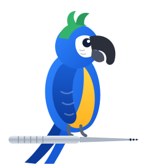

Now in testing with a working dental practice
Chart perio by voice.
Say pocket depths, bleeding, furcation, mobility, and recession out loud. PerioParrot repeats them straight into your perio chart, so your hands stay on the probe and your eyes stay on the patient.
For Windows practices using Dentrix® and other charting software that accepts keyboard entry.

pocket depths in a full-mouth exam: 32 teeth, 6 sites each. Plus bleeding, recession, furcation, and mobility.
Stop putting the probe down.
Charting alone means probe, keyboard, probe, keyboard, hundreds of times. Charting with a helper means calling out numbers and hoping they're heard right. PerioParrot lets you just say them.
-
Faster exams
Keep probing while you talk. No reaching for the keyboard between sites.
-
Fewer charting mistakes
Values go into the chart the moment you say them, with a confirmation after every entry. Anything it doesn't clearly recognize is ignored, never guessed.
-
Chart without a second person
Hygienists can complete the perio chart solo, and assistants are free for everything else.
Click. Speak. Glance.
PerioParrot runs quietly in the Windows system tray. There's nothing new to learn in your charting software. It types exactly as if you were typing yourself.
Click the first field
Open the patient's perio chart and click the site where you'd start typing. Turn listening on from the tray.
Say the values
“Three.” “Two.” “Four.” “Bleeding.” One value at a time, in a normal voice. Your chart advances the way it always does.
Glance at the confirmation
After every phrase a small pop-up shows what was entered, so a mistake is caught on the spot, not at the end of the exam.
What you can say
| Say | PerioParrot enters |
|---|---|
zerothrough nine | A pocket depth, one digit per site. For 10 and up, say the digits: one, zero. |
bleeding | Bleeding on probing |
suppuration | Suppuration / exudate |
furcation one… four | Furcation grade I–IV, in a single phrase |
mobility one… three | Mobility class 1–3, in a single phrase |
recession two | Gingival margin for the site, then back to pocket depth. Negative values work too: recession negative one. |
next/ back | Move one field forward or back without entering a value |
pause listening/ resume listening | Step away mid-exam without losing your place |
Coughs, side conversations, and anything off the list are ignored. You'll see a “Not understood” pop-up and nothing is typed.
Why a parrot?
Because that's the whole job. You say “three,” and PerioParrot repeats “3” into the chart, exactly as you said it. And like any well-trained bird, it only repeats what it heard clearly. If it isn't sure, it stays quiet and lets you know.
Your patients' data stays in your office.
PerioParrot listens and transcribes on the workstation itself. It doesn't need the cloud, an account, or a connection to your practice software's database.
- Speech is processed on the computer. No audio is sent anywhere.
- Nothing is sent to us. PerioParrot doesn't phone home with your data.
- No database access, no integration project. It types into the chart like a keyboard, nothing more.
What you need
A Windows PC
Windows 10 or 11. PerioParrot is a single program, with nothing else to install.
A microphone
Any microphone the computer can hear clearly. One-time internet access during setup.
Your perio chart
Dentrix, or other charting software that accepts keyboard entry.
Be one of the first practices to try it.
PerioParrot is being developed and tested alongside a working dental practice. Early access for more offices is opening soon.